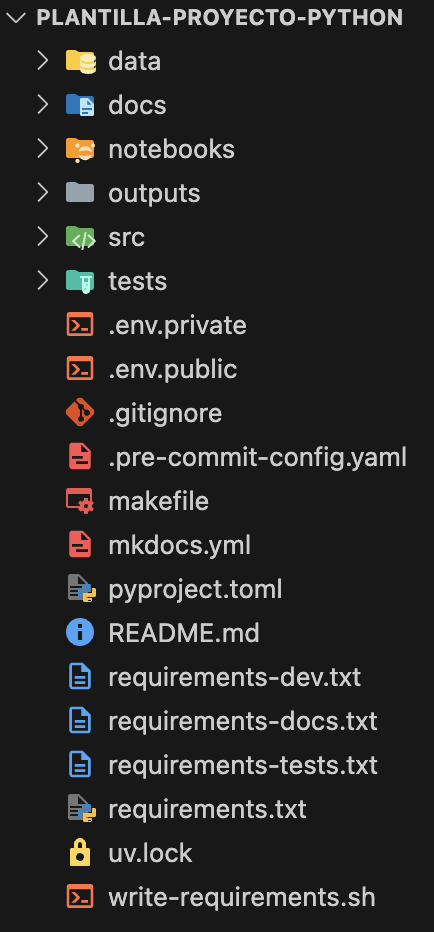

Documentación de la plantilla
Descripción
Plantilla para organizar proyectos que usan Python e incorpora mejores prácticas relacionadas con:
- Version control: Git (libro: Pro Git, tutorial: Getting Git Right: Learn Git with Tutorials, News and Tips)
- Project management, Virtual environments y Dependencies management: uv
- Static typing: mypy
- Code formatting, Linting y Style enforcement: Ruff
- Package vulnerability analysis: pip-audit
- Pre-Commit hooks: pre-commit
- Documentation: MkDocs, Material for MkDocs, Google docstrings
- Environmental variables y
.envfiles: Pydantic-Settings - Logging: Loguru
- Debugging: The Python Debugger (tutorial: Python Debugging With Pdb), IceCream
- Testing: pytest (tutorial: Effective Python Testing With Pytest), pytest-cov
Opcionalmente:
dvc: Data version control: DVC, (ver página Data version control para más detalles)notebooks: Jupyter notebooks: Jupyter kernels for Spyder and VS Code
Estructura
El proyecto usa la siguiente estructura de carpetas y archivos:

A continuación se describe el propósito de cada una de las carpetas:
-
data/ -
Carpeta para almacenar los archivos de datos (e.g. archivos
.csv,.parquet,.xlsx, ...). Dentro de la carpeta se pueden crear sub-carpetas para almacenar los datos en distintos estados (e.g. crudos (raw), pre-procesados, procesados, ...).Esta carpeta NO debe estar versionada con Git, y por defecto, está incluida en el
.gitignore.Se incluye una sub-carpeta especial (
querys/) destinada a almacenar los querys (archivos.sql) que se utilizan para generar los datos. Esta sub-carpeta si se debe versionar en Git, y por defecto, está configurada para que así sea.Para hacer versionamiento de los datos y/o modelos, se debe hacer uso lo explicado en la práctica relacionada con Data version control.
-
docs/ -
Carpeta para almacenar y gestionar la documentación del proyecto. Se administra usando MkDocs, Material for MkDocs y Google docstrings.
-
notebooks/ -
Carpeta para almacenar los cuadernos (notebooks. Archivos
.ipynb) que utilice en el proyecto. Si va a utilizar esta carpeta debe usar la práctica opcional Jupyter notebooks compatibility y seguir las instrucciones para hacer un adecuado versionamiento de los cuadernos. -
outputs/ -
Carpeta para almacenar los archivos de resultados (e.g. archivos
.pdf,.png,.csv,.parquet,.xlsx, ...). Dentro de la carpeta se pueden crear sub-carpetas para almacenar distintos tipos de resultados (e.g. informes, gráficos, resultados ...).Esta carpeta NO debe estar versionada con Git, y por defecto, está incluida en el
.gitignore.Para hacer versionamiento de los datos que hagan parte de los resultados, y por lo tanto se almacenen dentro de esta carpeta, se debe hacer uso lo explicado en la práctica relacionada con Data version control.
Si genera informes, se recomienda que en ellos incluya el tag que identifica la versión del proyecto que permite reproducirlo. De esta manera, en cualquier otro momento es posible recrear los datos, modelos y código que permite llegar a los mismos resultados.
-
src/ -
Carpeta para almacenar el código (archivos
.py). Dentro de la carpeta se pueden crear sub-carpetas para organizar el código adecuadamente. -
tests/ -
Carpeta para almacenar las pruebas del proyecto (archivos
.py). Dentro de la carpeta se pueden crear sub-carpetas para organizar las pruebas adecuadamente. Las pruebas se deben escribir usando pytest.
Uso
Para instalar la plantilla y empezarla a usar en un nuevo proyecto, debe tener instalado previamente en su equipo, Git (versión >= 2.49.0) y uv (versión >= 0.7.3).
¡Atención!
El proyecto tiene un makefile y un archivo shell (write-requirements.sh) que no corren en WindowsOS por defecto. Por lo tanto es necesario instalar si está utilizando este sistema operativo, adicionalmente, Make. (Tutorial: How to setup/install GNU make on Windows).
Si siguió las instrucciones descritas anteriormente, todas las funcionalidades de la plantilla debe funcionar adecuadamente tanto en WindowsOS, como en MacOS y LinuxOS. Si se le presentan errores:
- Es necesario remover el pre-commit que exporta los archivos de librarías requeridas de
.pre-commit-config.yaml. y no usarmake. - Agradecemos lo reporte para buscar una solución.
Posteriormente, siga los pasos descritos a continuación:
-
Cree un nuevo repositorio a partir de esta plantilla (template) con el nombre de su nuevo proyecto. Asegúrese de marcar la opción Include all branches.
-
Clone el nuevo repositorio en su equipo local.
-
Instale el proyecto, ejecutando:
Si desea usar algunas de las librerías que proporcionan mejores prácticas opcionales, ejecute:
- Debe reemplazar
<práctica opcional>por el código de la práctica opcional. Por ejemplo:... --extra dvc.
Si desea usar más de una práctica opcional, simplemente repita
--extra <práctica opcional>las veces que necesite al final de la instrucción.¡Atención!
Si opta por usar la opción
notebooks, debe agregar a su archivo de configuración de git (gitconfig)1 las siguientes instrucciones al final del mismo:[filter "strip-notebook-output"] clean = "uvx jupyter nbconvert --ClearOutputPreprocessor.enabled=True --ClearMetadataPreprocessor.enabled=True --to=notebook --stdin --stdout --log-level=ERROR"Esto le indica a git que al agregar un archivo
.ipynbal stage, debe crearle una copia en la que limpie la metadata y los outputs. De esta forma se optimiza el versionamiento de este tipo de archivos, y se garantiza que en el equipo local del usuario se mantienen tanto la metadata como los outputs. - Debe reemplazar
-
En el proyecto se usa pre-commit para automatizar la verificación del código antes de los commits y de los pushs. La librería ya está incluida en las dependencias necesarias para contribuir al proyecto, sin embargo, es necesario configurarla usando las siguientes instrucciones:
-
Consulte el archivo
src/tutorial.pypara conocer cómo usar las variables de entorno, el log y cómo hacer debugging fácilmente. -
Consulte el archivo
docs/tutorial.mdpara conocer las capacidades instaladas para documentar el proyecto. Para trabajar en la documentación, ejecute:Esto le permitirá ver en el explorador la versión final de la documentación y hará que esta se actualice en línea en la medida que realice cambios.
¡Eso es todo!, puede empezar a trabajar en su nuevo proyecto.
-
Este archivo se encuentra en la siguiente ruta:
~/gitconfig. ↩